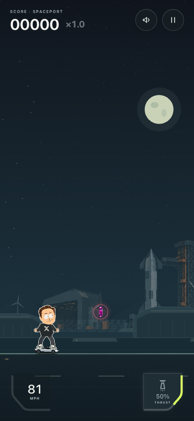
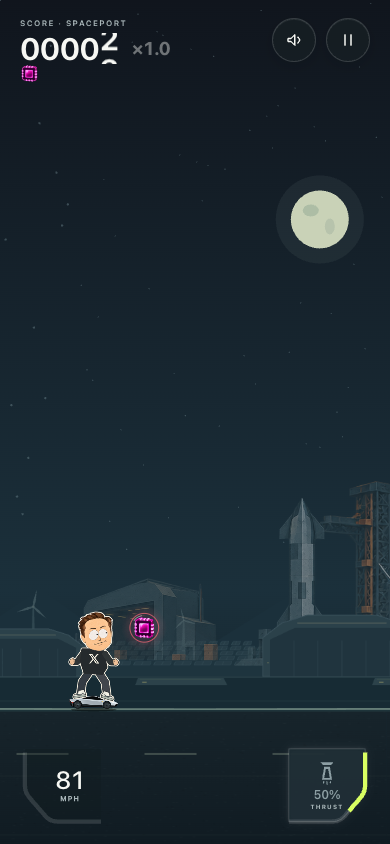
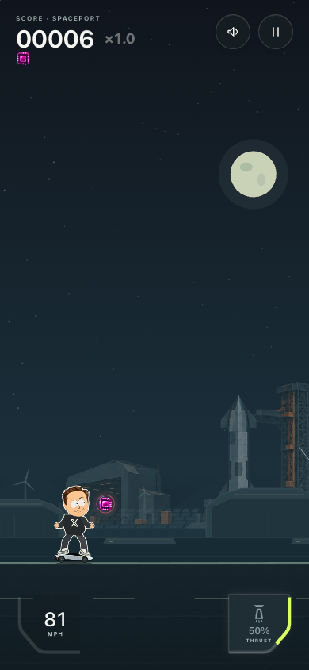
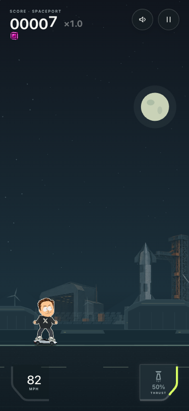
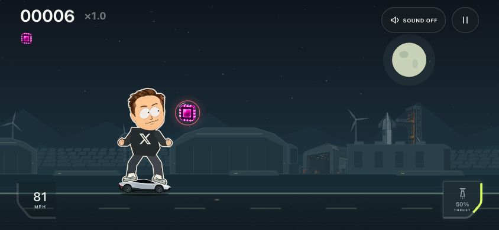

Сфера слегка покачивается. При приближении значок подаётся к Илону, затем за 0,32 секунды влетает в корпус и уменьшается. Область захвата шире видимой сферы; бонус включается сразу.
Запустить локальную игру · Проверки и ограничения




Кадры реального игрового renderer с подготовленными состояниями и остановкой симуляции в нужные моменты. На паузе анимация замирает; уменьшенное движение заменяет влёт коротким затуханием. Новые иллюстрации не создавались. Версия не опубликована; физический iPhone не проверен.
